Snakes of Azerbaijan
20 living snake species are recorded in Azerbaijan in SnakeList: 7 venomous and 13 non-venomous, from 4 families.
- 20living species
- 4families
Danger to people · tap a number to show only those snakes
- 0giant constrictors
Harmful = dangerously venomous + giant constrictors. Harmless = not venomous and not a giant constrictor. Mildly venomous snakes have no serious bites to people documented. Any snake can bite.
These totals count the unique living snake species SnakeList records in Azerbaijan. A species counts if it is recorded anywhere in the country, so not every snake lives in every part of it.
In SnakeList’s checklist filters
How many of the 20 living species here each filter in the SnakeList app picks out – tap a number to show only those snakes.
Snake family4 types, 4 families
Type
Family
Habitats15 habitat groups
Habitats are estimated from where each snake is recorded and what kind of snake it is, as in SnakeList; a snake can count in several.
Characteristics7 venomous, 5 constrictors
- 0snake eaters
Constrictor and Non-constrictor count only snakes whose family or genus is documented as constricting or not; the rest are not documented.
Other filters0 popular, 0 rare
- 0popular
- 0invasive
- 0rare
- 0no photos
- 0extinct
Species
Showing 20 species
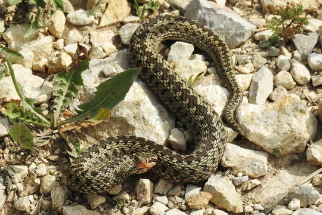
Alburzi ViperVipera eriwanensis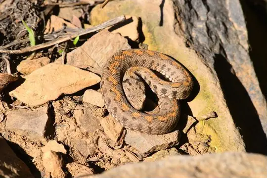
Armenian ViperMontivipera raddei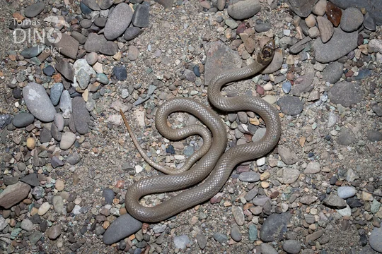
Asia Minor Dwarf RacerEirenis modestus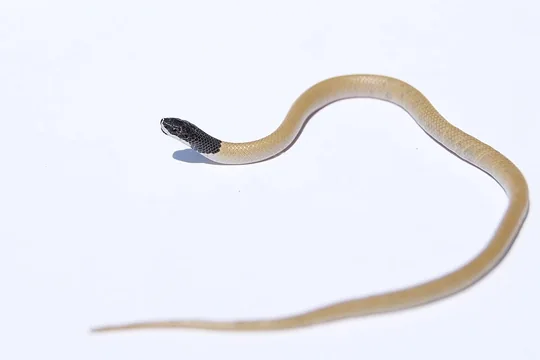
Black-headed Snake (melanocephalus)Rhynchocalamus melanocephalus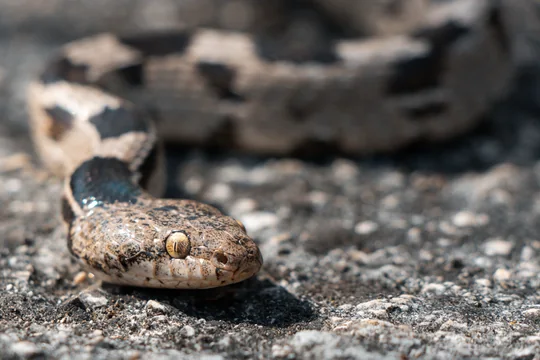
Cat SnakeTelescopus fallax Caucasian PitviperGloydius caucasicus
Caucasian PitviperGloydius caucasicus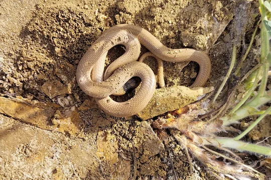
Collared Dwarf SnakeEirenis collaris Dinnik's ViperVipera dinniki
Dinnik's ViperVipera dinniki Dione SnakeElaphe dione
Dione SnakeElaphe dione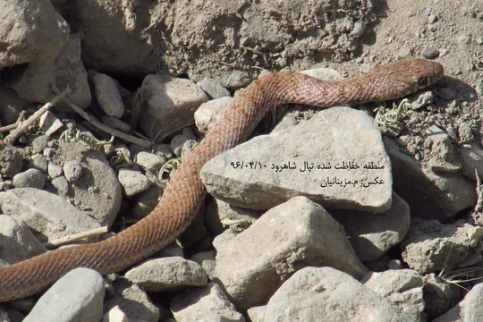
Dotted Dwarf SnakeEirenis punctatolineatus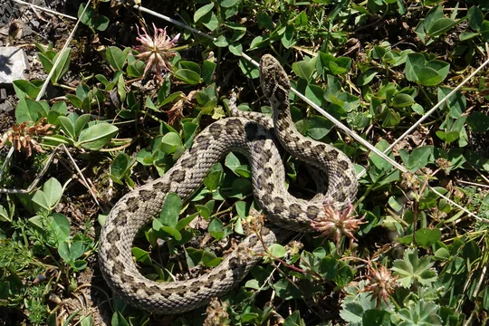
Lotiev's ViperVipera lotievi Nose-horned ViperVipera ammodytes
Nose-horned ViperVipera ammodytes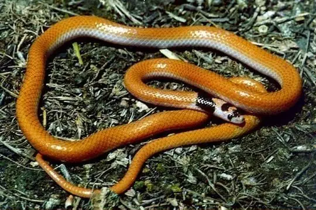
Palestine Kukri SnakeRhynchocalamus satunini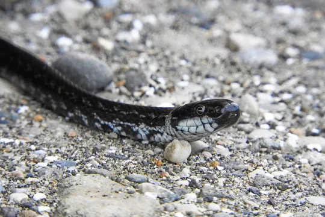
Persian Rat SnakeZamenis persicus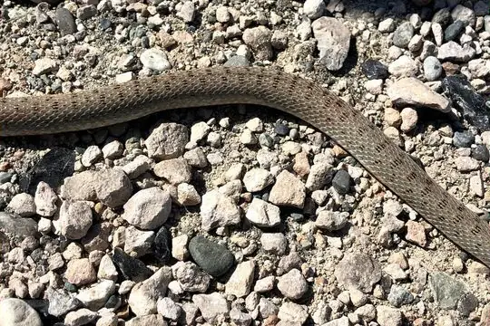
Red-Bellied RacerDolichophis schmidti Sand Boa (jaculus)Eryx jaculus
Sand Boa (jaculus)Eryx jaculus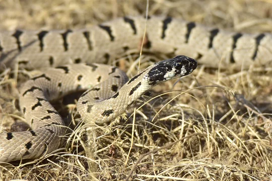
Spotted Whip SnakeHemorrhois ravergieri Steppe Ribbon RacerPsammophis lineolatus
Steppe Ribbon RacerPsammophis lineolatus Transcaucasian Rat SnakeZamenis hohenackeri
Transcaucasian Rat SnakeZamenis hohenackeri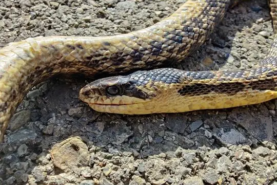
Urartian Rat SnakeElaphe urartica
No snakes in Azerbaijan match.
Azerbaijan’s snakes in numbers
- Families: Colubridae 12, Viperidae 6, Boidae 1, Psammophiidae 1.
How precisely they are recorded
Of the 20 living species recorded in Azerbaijan, 6 are recorded by region in SnakeList’s data; 14 are recorded only for Azerbaijan as a whole, so the region pages list them as possible rather than recorded. SnakeList records each species by region, not by exact spot, so a species listed for a region may live in only part of it.
Regions
The regions where SnakeList records snakes, with how many living species are recorded in each. Each page has its species, venomous snakes, families, the species found only there, its cities and neighbours.
- Absheron Economic Region 1 species
- Daghlig Shirvan Economic Region 1 species
- Ganja-Gazakh Economic Region 1 species
- Guba-Khachmaz Economic Region 1 species
- Kalbajar-Lachin Economic Region 1 species
- Lankaran Economic Region 3 species
No place matches that.
Cities
Its biggest cities, biggest first. SnakeList records snakes by region, not by city, so each city page shows the species recorded in its region and, separately, those only possible there - not species confirmed in the city.